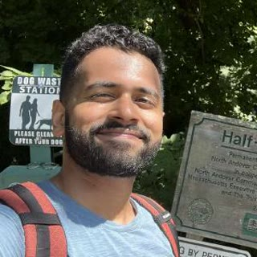
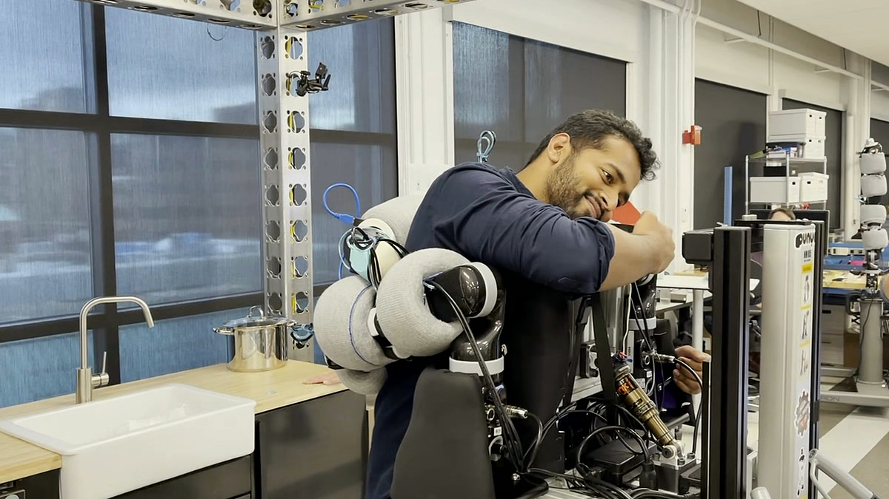
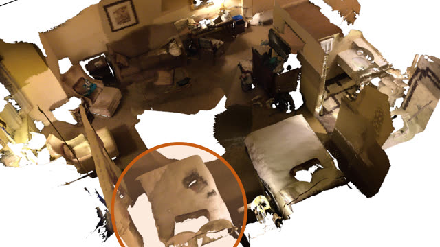

I build and study robot foundation policies at General Motors, and I am finishing a PhD at Northeastern's RIVeR Lab with Taşkın Padır. I live in Boston.
Most of my current work starts from a simple question: if you tell a robot the same thing in two different ways, does it do the same thing? Often it does not. I am interested in measuring that gap carefully, in understanding where it comes from inside vision-language-action and world-action models, and in building policies that close it.
Before GM I was an Applied Scientist at the Boston Dynamics AI Institute, now the RAI Institute, and I interned at Amazon Robotics and Toyota Research Institute. I studied computer engineering at Drexel.


Research
-
Same Goal, Different Words: Spatial Instruction Sensitivity in World-Action Models Three world-action models, 864 rollouts, one goal said three ways. Naming the reference object first costs about twelve points of success. A.-A. Abbas, E. Seraj, B. Toghi, T. Padır. CoRL 2026 Workshop, Do Robots Need World Models?
arXivsitecodenote -
AnyTask: An Automated Task and Data Generation Framework for Advancing Sim-to-Real Policy Learning Foundation models and GPU simulation generate manipulation tasks and data. Policies trained only on that data reach 44% success on real pick-and-place, drawer, and pushing tasks. R. Gong, X. Zhang, J. Shang, M. V. Minniti, J. Patel, V. Pepe, R. Yan, A. Gundogdu, I. Kapelyukh, A. Abbas, X. Yan, H. Patel, L. Herlant, K. Schmeckpeper. arXiv, 2025.
arXivsite -
Jacta: A Versatile Planner for Learning Dexterous and Whole-Body Manipulation A planner that writes its own demonstrations for dexterous and whole-body tasks, so reinforcement learning can learn things it otherwise cannot. The policies transfer to real robots. J. Brüdigam, A.-A. Abbas, M. Sorokin, K. Fang, B. Hung, M. Guru, S. Sosnowski, J. Wang, S. Hirche, S. Le Cleac'h. CoRL 2024.
arXivsite -
A Probabilistic Motion Model for Skid-Steer Wheeled Mobile Robot Navigation on Off-Road Terrains A Gaussian-process motion model that predicts where a skid-steer robot will end up on unseen terrain, more accurately than the kinematic model. A. Trivedi, M. Zolotas, A. Abbas, S. Prajapati, S. Bazzi, T. Padır. ICRA 2024.
doicodevideo -

Context-Aware Entity Grounding with Open-Vocabulary 3D Scene Graphs Finding the object a person means, using the objects around it, in open-vocabulary 3D scene graphs. H. Chang, K. Boyalakuntla, S. Lu, S. Cai, E. Jing, S. Keskar, S. Geng, A. Abbas, L. Zhou, K. Bekris, A. Boularias. CoRL 2023.
arXivsite -
Radio Modulation Classification Using Deep Residual Neural Networks Turning raw I/Q samples into images for a residual network. Picking the right transform, the outer product, was worth up to ten points of accuracy on RadioML. A. Abbas, V. Pano, G. Mainland, K. Dandekar. MILCOM 2022.
doi
Writing
- Nov 2026Same goal, different words
- Nov 2026Language sensitivity is not control
Code
- steerable matched language interventions for VLAs and world-action models on DROID and RoboTwin, with every rollout kept.
- BitWAM 1.58-bit vision-language-action policies with BitNet quantization.
- ros2-docker-dev ROS 1 and 2 with GUI support in Docker, without the hassle.
Elsewhere
Away from work I ride a Triumph Bonneville T120 around Boston, mostly early, when the city is still quiet. On clear nights I set up a telescope. I speak three languages and am learning two more.